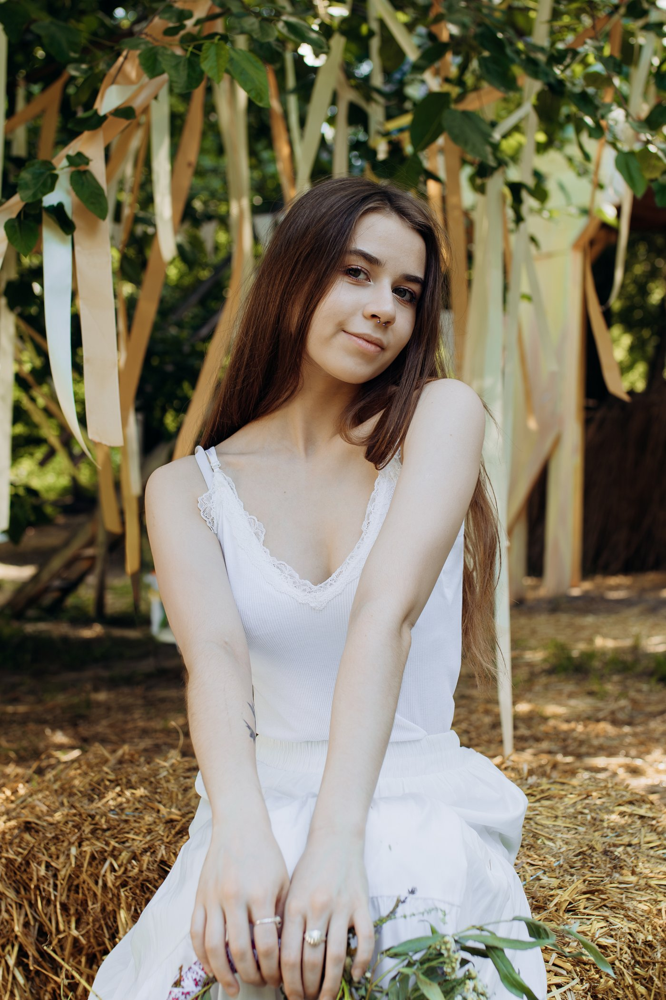

I'm Alyona — a motion and graphic designer with a background in art and graphic design.
For a little over a year, I worked with the Relatio team at Skelar, creating performance marketing creatives — from video editing, animation and AI-generated visuals to static content and creative adaptations for different markets. Working closely with marketers and UA teams taught me to think about creative not just as something visual, but as a tool designed to work for a specific audience and goal.
I also took ownership of the localization workflow, researching new tools, building processes, experimenting with AI prompts and looking for ways to make production more efficient. Later, I mentored a new team member and ran localization workshops, exploring how casting, voice, music and tone can influence creative performance across different markets.
Before motion, I worked in graphic design, photography, branding and print, as well as on freelance projects. I've been drawing and studying visual art since childhood and later earned a Bachelor's degree in Graphic Design.
I love experimenting, exploring new things and constantly learning. Outside of work, I draw, practice yoga, go running, and enjoy tea, nature and slowing down after a busy day.